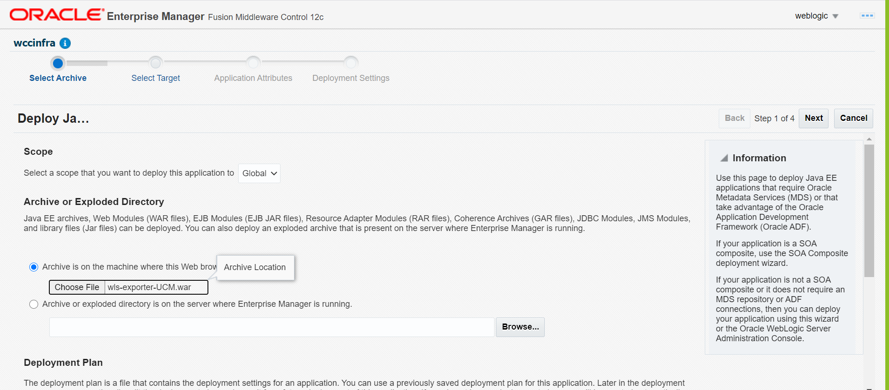
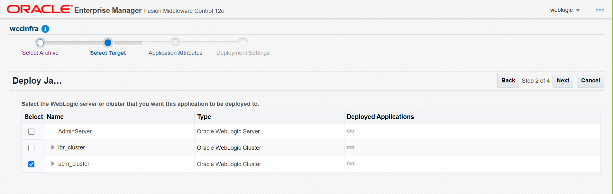
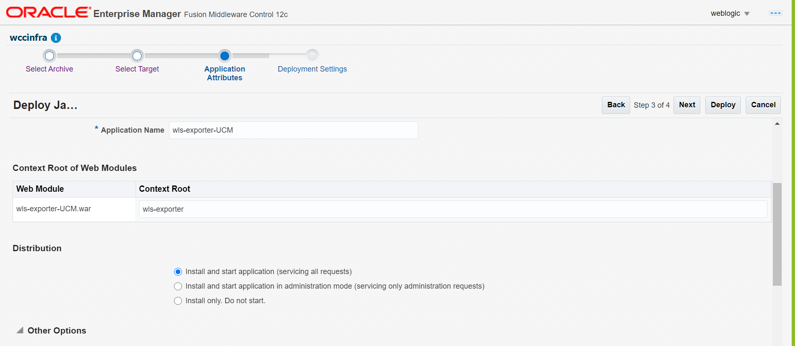
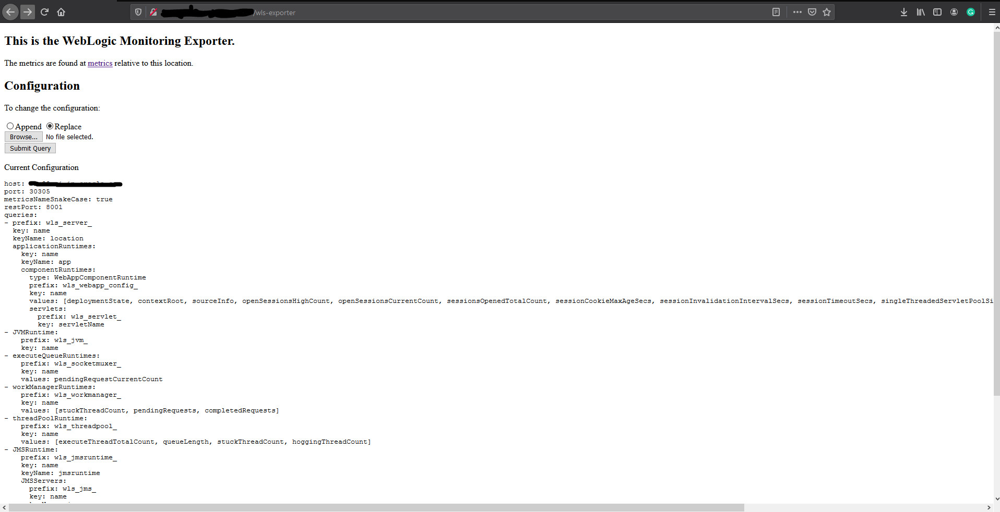
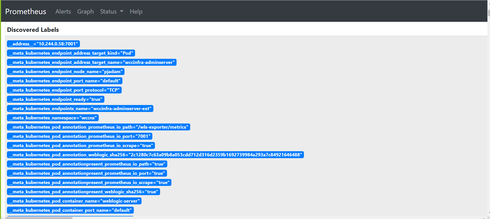
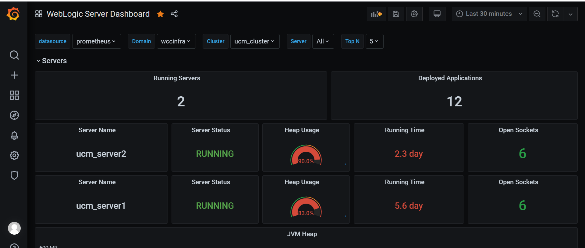

Monitor an Oracle WebCenter Content domain
You can monitor a WebCenter Content domain using Prometheus and Grafana by exporting the metrics from the domain instance using the WebLogic Monitoring Exporter. This sample shows you how to set up the WebLogic Monitoring Exporter to push the data to Prometheus.
Prerequisites
This document assumes that the Prometheus Operator is deployed on the Kubernetes cluster. If it is not already deployed, follow the steps below for deploying the Prometheus Operator.
Deploy Prometheus and Grafana
Refer to the compatibility matrix of Kube Prometheus and clone the release version of the kube-prometheus repository according to the Kubernetes version of your cluster.
Clone the kube-prometheus project
$ git clone https://github.com/coreos/kube-prometheus.git
Label the nodes
Kube-Prometheus requires all the exporter nodes to be labelled with kubernetes.io/os=linux. If a node is not labelled, then you must label it using the following command:
$ kubectl label nodes --all kubernetes.io/os=linux
Create Prometheus and Grafana resources
Change to the kube-prometheus directory and execute the following commands to create the namespace and CRDs:
NOTE: Wait for a minute for each command to process.
$ cd kube-prometheus
$ kubectl create -f manifests/setup
$ until kubectl get servicemonitors --all-namespaces ; do date; sleep 1; echo ""; done
$ kubectl create -f manifests/
Provide external access
To provide external access for Grafana, Prometheus, and Alertmanager, execute the commands below:
$ kubectl patch svc grafana -n monitoring --type=json -p '[{"op": "replace", "path": "/spec/type", "value": "NodePort" },{"op": "replace", "path": "/spec/ports/0/nodePort", "value": 32100 }]'
$ kubectl patch svc prometheus-k8s -n monitoring --type=json -p '[{"op": "replace", "path": "/spec/type", "value": "NodePort" },{"op": "replace", "path": "/spec/ports/0/nodePort", "value": 32101 }]'
$ kubectl patch svc alertmanager-main -n monitoring --type=json -p '[{"op": "replace", "path": "/spec/type", "value": "NodePort" },{"op": "replace", "path": "/spec/ports/0/nodePort", "value": 32102 }]'
NOTE:
32100is the external port for Grafana32101is the external port for Prometheus32102is the external port for Alertmanager
Set Up the WebLogic Monitoring Exporter
Set up the WebLogic Monitoring Exporter that will collect WebLogic Server metrics and monitor your Oracle WebCenter Content domain.
Generate the WebLogic Monitoring Exporter Deployment Package
Two packages are required as the listening ports are different for the Administration Server and Managed Servers.
One binary required for the Admin Server (wls-exporter-as.war) and one for Managed Cluster (wls-exporter-ms.war).
Set the required proxies and then run the script getX.X.X.sh to generate two binaries:
Download WebLogic Monitoring Exporter
Download WebLogic Monitoring Exporter package from https://github.com/oracle/weblogic-monitoring-exporter/releases
Download wls-exporter.war and getX.X.X.sh
Create configuration file for WebLogic Monitoring Exporter
In this step we will create the configuration file for WebLogic Monitoring Exporter.The configuration will have the server port for serving the webapp, metrics to be scraped from the WebLogic server etc.
In this step we will generate the deployemt package. We have to generate three separate packages with restPort as 7001 16200 and 16250 in config.yaml. The three packages are required as the listening ports for AdminServer, Oracle WebCenter Content server & Oracle WebCenter Inbound Refinery server.
Use getX.X.X.sh script to update the configuration file into wls-exporter package. Below a sample usage
Set the required proxies and then run the script getX.X.X.sh
$ cd kubernetes/samples/scripts/create-wcc-domain/utils/weblogic-monitoring-exporter
$ sh get1.2.0.sh config-admin.yaml
Output:
./get1.2.0.sh config-admin.yaml
% Total % Received % Xferd Average Speed Time Time Time Current
Dload Upload Total Spent Left Speed
100 642 100 642 0 0 1186 0 --:--:-- --:--:-- --:--:-- 1184
100 2033k 100 2033k 0 0 846k 0 0:00:02 0:00:02 --:--:-- 1527k
created /tmp/ci-6gGPjopn3l
/tmp/ci-6gGPjopn3l /<your_path>/prometheus/weblogic_monitor_exporter
in temp dir
adding: config.yml (deflated 63%)
Generate the packages for Managed Servers/clusters with the different configuration file.
Deploy the WebLogic Monitoring Exporter
Follow these steps to deploy the package in the WebLogic Server instances:
-
In the Administration Server and Managed Servers, deploy the WebLogic Monitoring Exporter (
wls-exporter.war) separately using the Oracle Enterprise Manager.
-
Select the servers to which the Exporter WAR should be deployed:

-
Set the application name. The application name must be different if it is deployed separately in the Administration Server and Managed Servers. Make sure the context-root for both the deployments is
wls-exporter:
-
Click Install and start application.
-
Then deploy the WebLogic Monitoring Exporter application.
-
Activate the changes to start the application. If the application is started and the port is exposed, then you can access the WebLogic Monitoring Exporter console using this URL:
http://<server:port>/wls-exporter.
-
Repeat same steps for ucm, ibr, ipm, capture and wccadf servers.
Configure Prometheus Operator
Prometheus enables you to collect metrics from the WebLogic Monitoring Exporter. The Prometheus Operator identifies the targets using service discovery. To get the WebLogic Monitoring Exporter end point discovered as a target, you must create a service monitor pointing to the service.
See the following sample service monitor deployment YAML configuration file located at
kubernetes/samples/scripts/create-wccontent-domains/utils/weblogic-monitoring-exporter/wls-exporter.yaml.
ServiceMonitor for wls-exporter:
The exporting of metrics from wls-exporter requires basicAuth so a Kubernetes Secret is created with the user name and password that are base64 encoded. This Secret will be used in the ServiceMonitor deployment.
When generating the base64 encoded strings for the user name and password, observe if a new line character is appended in the encoded string. This line character causes an authentication failure. To avoid a new line string, use the following example:
$ echo -n "welcome1" | base64
d2VsY29tZTE=
In the deployment YAML configuration for wls-exporter shown above, weblogic.domainName: wccinfra is used as a label under spec.selector.matchLabels, so all the services will be selected for the service monitor. If you don’t use this label, you should create separate service monitors for each server - if the server name is used as matching labels in spec.selector.matchLabels. Doing so will require you to relabel the configuration because Prometheus, by default, ignores the labels provided in the wls-exporter.
By default, Prometheus does not store all the labels provided by the target. In the service monitor deployment YAML configuration, you must mention the relabeling configuration (spec.endpoints.relabelings) so that certain labels provided by weblogic-monitoring-exporter (required for the Grafana dashboard) are stored in Prometheus. Do not delete the following section from the configuration YAML file:
relabelings:
- action: labelmap
regex: __meta_kubernetes_service_label_(.+)
Add RoleBinding and Role for the WebLogic Domain Namespace
The RoleBinding is required for Prometheus to access the endpoints provided by the WebLogic Monitoring Exporter. You need to add RoleBinding for the namespace under which the WebLogic Servers pods are running in the Kubernetes cluster. Edit the kube-prometheus/manifests/prometheus-roleBindingSpecificNamespaces.yaml file in the Prometheus Operator deployment manifests and add the RoleBinding for the namespace (wccns) similar to the following example:
- apiVersion: rbac.authorization.k8s.io/v1
kind: RoleBinding
metadata:
name: prometheus-k8s
namespace: wccns
roleRef:
apiGroup: rbac.authorization.k8s.io
kind: Role
name: prometheus-k8s
subjects:
- kind: ServiceAccount
name: prometheus-k8s
namespace: monitoring
Similarly, add the Role for the namespace under which the WebLogic Servers pods are running in the Kubernetes cluster. Edit kube-prometheus/manifests/prometheus-roleSpecificNamespaces.yaml in the Prometheus Operator deployment manifests and add the Role for the namespace (wccns) similar to the following example:
- apiVersion: rbac.authorization.k8s.io/v1
kind: Role
metadata:
name: prometheus-k8s
namespace: wccns
rules:
- apiGroups:
- ""
resources:
- services
- endpoints
- pods
verbs:
- get
- list
- watch
Then apply prometheus-roleBindingSpecificNamespaces.yaml and prometheus-roleSpecificNamespaces.yaml for the RoleBinding and Role to take effect in the cluster.
$ kubectl apply -f kube-prometheus/manifests/prometheus-roleBindingSpecificNamespaces.yaml
$ kubectl apply -f kube-prometheus/manifests/prometheus-roleSpecificNamespaces.yaml
Deploy the Service Monitor
To deploy the service monitor, use the above wls-exporter.yaml deployment YAML and run the following command:
$ cd kubernetes/samples/scripts/create-wccontent-domains/utils/weblogic-monitoring-exporter/
$ kubectl create -f wls-exporter.yaml
Enable Prometheus to Discover the Service
After the deployment of the service monitor, Prometheus should be able to discover wls-exporter and export metrics.
You can access the Prometheus dashboard at http://mycompany.com:32101/.

Deploy Grafana Dashboard
To view the domain metrics, deploy the Grafana dashboard provided in the WebLogic Monitoring Exporter.
You can access the Grafana dashboard at http://mycompany.com:32100/.
-
Log in to Grafana dashboard with
admin/admin. -
Go to Settings, then select DataSources, and then Add Data Source.
HTTP URL: Prometheus URL
http://mycompany.com:32101/Auth: Enable Basic Auth
Basic Auth Details: WebLogic credentials provided in step Configure Prometheus Operator

-
Download the
weblogic_dashboard.jsonfile from here. -
Click Add and then Import. Paste the modified JSON in the Paste JSON block, and then load it.

This displays the WebLogic Server Dashboard.
